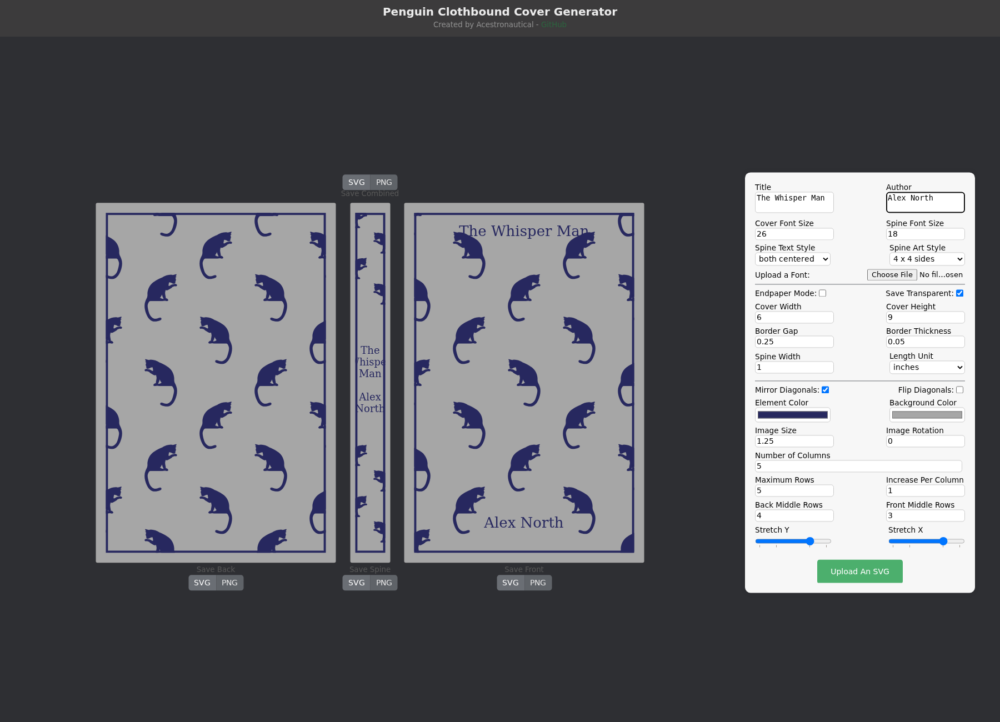
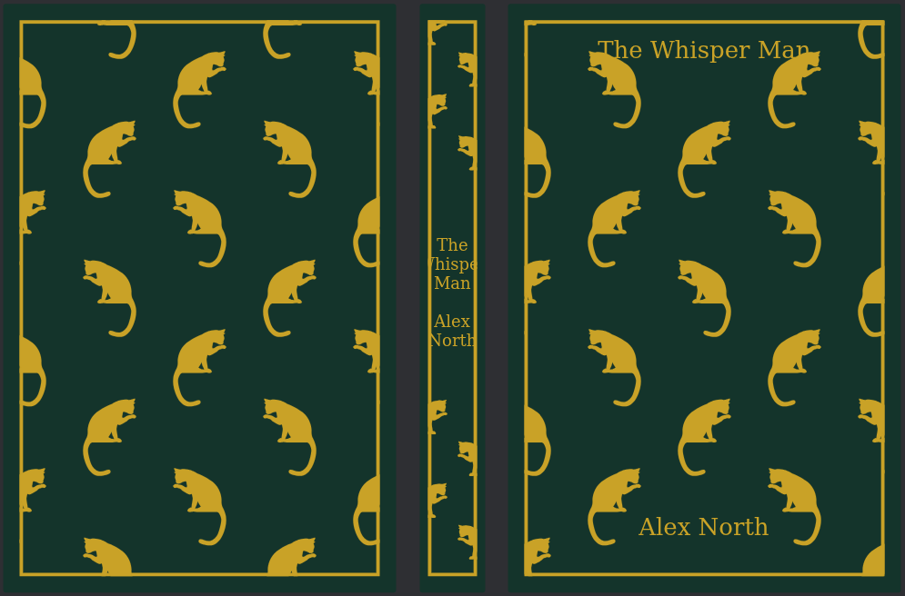
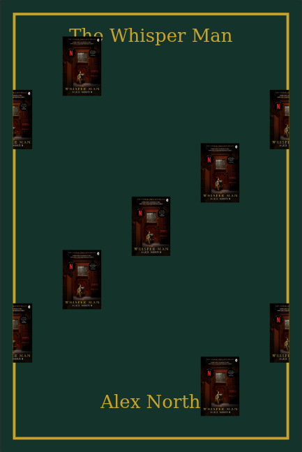
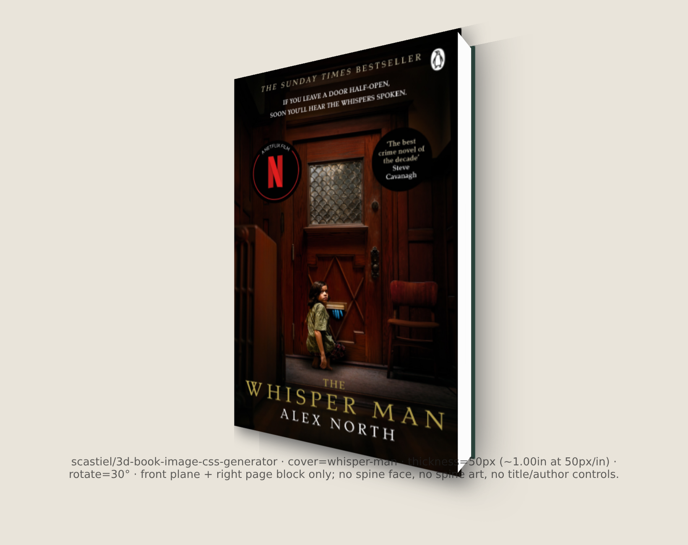
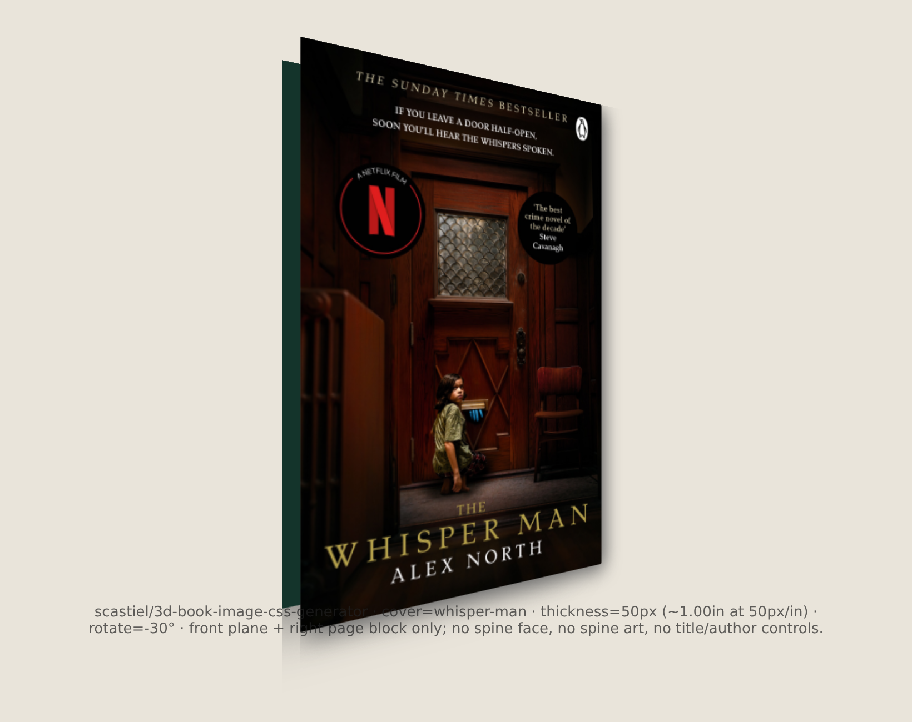
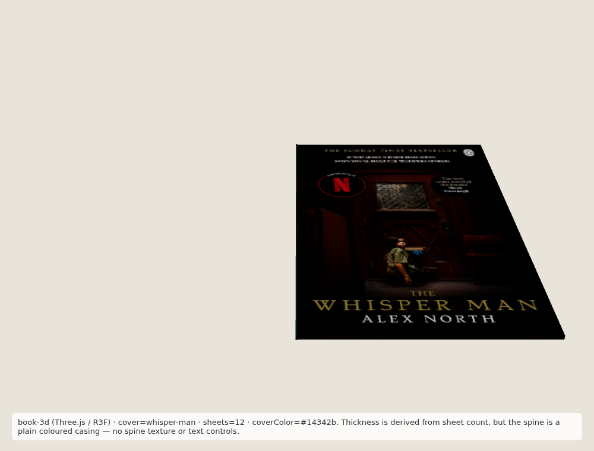
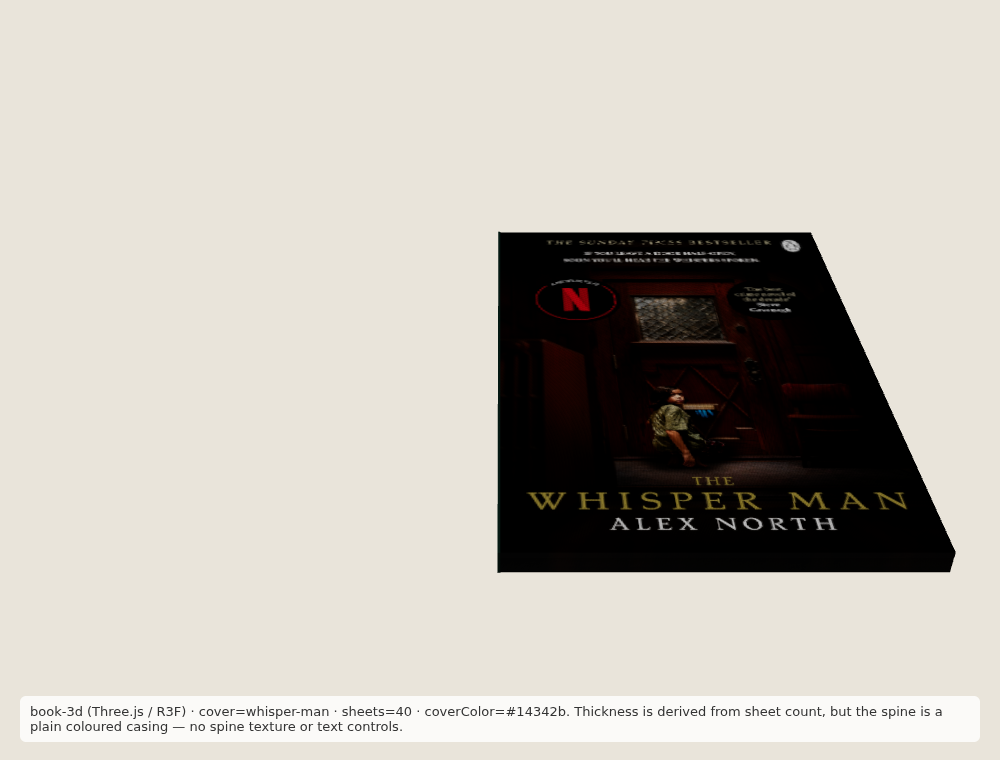

Spine generation test: bookcover-js & comparables
Isolated test harness under .scratch/spine-cover-art-prototype/bookcover-js-test/. Full findings, commands and measurements are in REPORT.md.
1. bookcover-js
Live: acestronautical.github.io/bookcover-js · Repo: github.com/acestronautical/bookcover-js. Source is 1,395 lines including a single HTML file; last commit 2024-08-14; 30 stars; 6 open issues; MPL-2.0; no npm package or reusable API.


Spine width is manual; text does not fit itself
“Upload a cover” is not a thing

.svg only. Embedding the real Whisper Man JPEG in an SVG wrapper makes it tile as a small ornamental motif on the front — it is never used as the cover.Combined export is not a printable wrap

2. Comparable: 3D Book Image CSS Generator (scastiel)
GitHub · MIT · 658 stars · last push 2023-04-19 · demo now at scastiel.dev/3dbook.
Tested by reproducing its exact generated HTML/CSS locally with real PocketLibrary covers: comparables/3d-book-css/book.html.


Note: the Rock Paper Scissors cover already has a red spine strip baked into the front JPEG, which makes the mock look as if it generated a spine. It did not; it mapped the rightmost pixels of the front image onto the front plane.
3. Comparable: book-3d (React + Three.js)
npm book-3d · 1.0.0 published 2026-11-12 · React/R3F/Three.js.
Local harness: comparables/book-3d-harness/.

coverColor box whose thickness is derived from pages.length.
thickness prop is ignored in 1.0.0.What this means for PocketLibrary
- bookcover-js solves a different problem: decorative Penguin-style print panels for cutting plotters. It cannot preserve a commercial front cover, derive a spine from page count, or export a physically continuous wrap.
- The CSS and Three.js comparables produce attractive 3D front-cover mockups, but neither generates a spine from the cover; they hide or ignore the spine.
- PocketLibrary should compute spine width from page count + paper stock, compose a back/spine/front texture at the correct pixel aspect, and map that onto a box. A small in-house CSS/Three.js renderer is lower risk than adopting any of these projects.
Screenshots were captured with Playwright 1.65.1/Chromium at 127.0.0.1:4173 (bookcover-js) and a local Vite server on 4174 (book-3d). No production files, tests or manifests were modified.